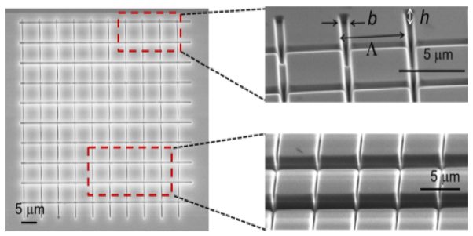
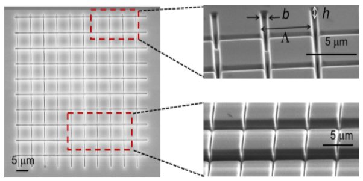

Research Experiences
Research Project 1 at Georgia Institution of Technology
Supervisior: Adibi Ali, Professor and Joseph M. Pettit Chair of Electronics, School of Electrical and Computer Engineering in Georgia Institution of Technology
- Wavelength selective infrared thermal emission mediated by magnetic polaritons from silicon carbide metasurfaces
- 2D material (Graphene, TMDCs, etc.) based integrated optoelectronics, high Q-resonators like nanodisks
 

Research Project 2
Supervisor: Prof.Zhenyu Yang. In cooperation with Prof. Isabelle Staude in Universität Jena, Germany
In National Laboratory for optoelectronics, Wuhan
- A design of broadband achromatic dielectric metalens for linear polarization in the near-infrared spectrum
- Broadband ultracompact polarimeters in infrared spectrum
Research Project 3
In cooperation with the Prof. Peter G.R. Smith in Optoelectronics Research Centre, University of Southampton, UK
- photonic intergrated devices design used for all-optical signal processing
- Continuously-tunable photonic fractional Hilbert Transformer based on a high birefringent planar Bragg grating in waveguide
Collect from 网页模板
Publications
“Ultra-wideband and continuously-tunable fractional photonic Hilbert transformer based on a single high-birefringence planar Bragg grating”
first-author
submitted to Optical Express for review
“A design of broadband achromatic dielectric metalens for linear polarization in the near-infrared spectrum”
first-author
submitted to Optical Letters for review
“Micro-machining for TE/TM mode phase matching in high-birefringence planar waveguide and implementation in continuously-tunable Fractional Hilbert transform ”
first-author
submitted for publication to POEM, wuhan in November 2018
Academic Performance
GPA:88.3/100 3.91/4
TOFLE:101
GRE:321
Exchange Experience
University of California, San Diego
University of California, San Diego ’s visiting student in 2017 Fall with CSC scholarship
Curriculum:
- Electromagnetic Optics :A+
- Data network :A
- Devices&Materials :A
- GPA:4.0/4.0
Research Skills
Experiment Skills
- Waveguide Fabrication, characterization, and measurement of spectrual response, etc.
- Platform techniques for integrated optoelectronics applications.
- Laser system experiments, calibrating, aligning and measurements.
Software Skills
FDTD
Matlab
ZEMAX
COMSOL
C
Python
verilog Altium Designer Rsoft LATEX solidworks
verilog Altium Designer Rsoft LATEX solidworks
Awards
Profiles